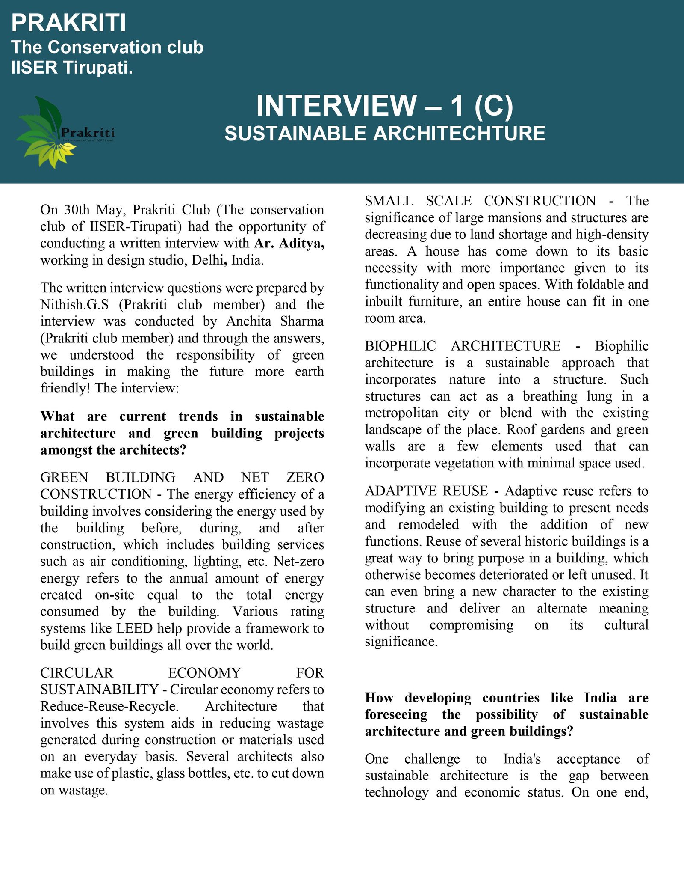
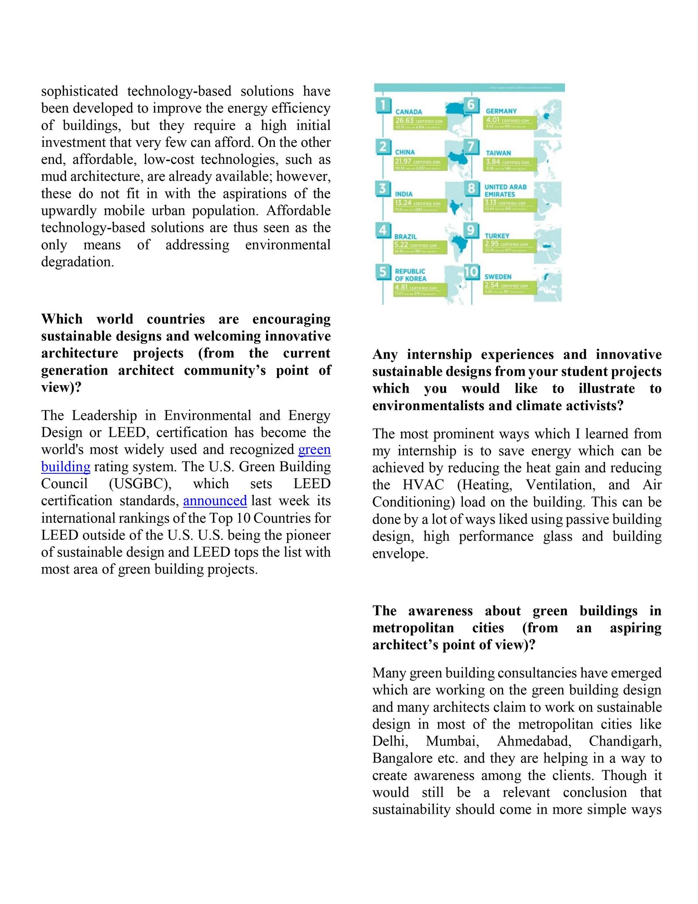
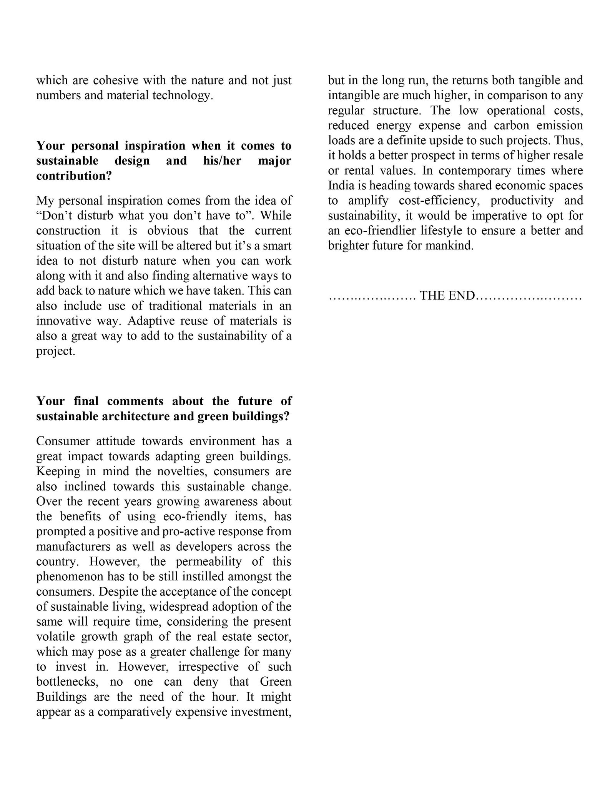

In May 2021 Prakriti put the same set of questions to three architects. The questions were prepared by Nithish G. S. and the interviews were conducted by Anchita Sharma, both club members at the time. All three answered in writing; their replies are below, followed by the original pages.
Part A: Ms. Bhavya
Associate Professor, MM School of Architecture, MMU, Sadopur-Ambalal, Punjab, India · 29 May 2021
Through the answers, we got a new perspective about sustainable architectural designs existing in the world.
What are current trends in sustainable architecture and green building projects amongst the architects?
Orienting the building on the site in such a way that wind flows through nature is an efficient way of ventilation with minimal or no air conditioning systems. With the help of architectural elements like sun shading devices and wing walls, passive design can open new possibilities to achieve low-cost construction. Architects these days usually prefer designing environment friendly building by using various techniques, some of which I have mentioned above.
How developing countries like India are foreseeing the possibility of sustainable architecture and green buildings?
India has been on the forefront of change, including the 2006 National Environmental Policy, which targeted a host of challenging issues including pollution, waste management and energy, and the 2008 National Action Plan on Climate Change which focused on the critical balance between economic development and climate change.
Which world countries are encouraging sustainable designs and welcoming innovative architecture projects (from the current generation architect community’s point of view)?
Singapore has emerged as a model of green building for planners and developers across much of the Asia-Pacific region, where poor design reigns and developers have historically seen little incentive to invest in sustainability, according to Asia-based architects and sustainability experts. Singapore’s BCA (Building and Construction Authority) is now marketing its rating tool ‘Green Mark’ as a brand in Southeast Asia, China, and parts of tropical Africa — even in countries, such as neighboring Malaysia, where local rating tools offer competing certification systems.
The awareness about green buildings in metropolitan cities (from an aspiring architect’s point of view)?
There are very few green buildings under construction and these few buildings could be a source of awareness. Understanding the level of awareness, perceptions and attitudes of artisans, communities and professionals on green building practices provides a good baseline on which to disseminate information on green building technology.
Various efforts are going on to educate humankind about green buildings and in metropolitan cities people are appreciating the thoughts and even trying to use it in day-to-day life.
Your personal inspiration when it comes to sustainable design and his/her major contribution?
My inspiration is Architect Le Corbusier who designed the Chandigarh city.
Your final comments about the future of sustainable architecture and green buildings?
Sustainable architecture is at the front and center of new green building and renovation projects around the world. It has the potential to significantly benefit both the humans who occupy urban spaces and the surrounding environment.
Now, architects and buildings are expected to be engaged with sustainable standards, such as LEED (Leadership in Energy and Environmental Design) titles, photovoltaic cells, or green roofs—all things that these projects have in common.
Part B: Ms. Ekta Sharma
Associate Professor, MM School of Architecture, MMU, Sadopur-Ambalal, Punjab, India · 30 May 2021
Through the answers, we realized that sustainable architectural designs are vital for the future.
What are current trends in sustainable architecture and green building projects amongst the architects?
Solar Passive and active design strategies are currently used in the green and sustainable projects by the architect. These strategies are used to promote clean energy and provide the comforts to the occupants with harming the environment.
How developing countries like India are foreseeing the possibility of sustainable architecture and green buildings?
In India energy consumption is rapidly increasing due to the increase in population and urbanization. According to World Watch Institute data, buildings are responsible for the annual consumption of 40% of the world's energy. In India, ministry was established as the Ministry of Non-Conventional Energy Sources in 1992. Currently it is known as The Ministry of New and Renewable Energy (MNRE). Aim of the ministry is to develop and deploy new and renewable energy for supplementing the energy requirements of India. This is the very important step taken by the government of India to promote the sustainable and green building.
Which world countries are encouraging sustainable designs and welcoming innovative architecture projects (from the current generation architect community’s point of view)?
According to the LEED (Leadership in Energy and Environmental Design) certified and registered projects report till Feb 2019, Mainland China has maximum no. of green buildings. India is on the no. three in the list. Canada, Brazil, Germany is also in the top 10 countries those are working on sustainable designs.
Any internship experiences and innovative sustainable designs from your student projects which you would like to illustrate to environmentalists and climate activists?
Not yet.
The awareness about green buildings in metropolitan cities (from an aspiring architect’s point of view)?
Many Seminars, workshops and exhibitions are conducted now these days in metropolitan cities to provide awareness about green buildings in India.
Your personal inspiration when it comes to sustainable design and his/her major contribution?
I am personally inspired by Ar. Balkrishna Vithaldas Doshi’s works. He always gives attention to climate and surroundings of the site in his projects.
Your final comments about the future of sustainable architecture and green buildings?
In my opinion, Sustainable Architecture is the need of our planet earth. Many smart materials (Self-healing Concrete, Transparent Aluminum, Permeable Concrete etc.) are innovated for the betterment of the construction industries. Integration of Architectural design and technology is the future of sustainable architecture and green buildings.
Part C: Ar. Aditya
Design studio, Delhi, India · 30 May 2021
Through the answers, we understood the responsibility of green buildings in making the future more earth friendly.
What are current trends in sustainable architecture and green building projects amongst the architects?
Green building and net zero construction. The energy efficiency of a building involves considering the energy used by the building before, during, and after construction, which includes building services such as air conditioning, lighting, etc. Net-zero energy refers to the annual amount of energy created on-site equal to the total energy consumed by the building. Various rating systems like LEED help provide a framework to build green buildings all over the world.
Circular economy for sustainability. Circular economy refers to Reduce-Reuse-Recycle. Architecture that involves this system aids in reducing wastage generated during construction or materials used on an everyday basis. Several architects also make use of plastic, glass bottles, etc. to cut down on wastage.
Small scale construction. The significance of large mansions and structures are decreasing due to land shortage and high-density areas. A house has come down to its basic necessity with more importance given to its functionality and open spaces. With foldable and inbuilt furniture, an entire house can fit in one room area.
Biophilic architecture. Biophilic architecture is a sustainable approach that incorporates nature into a structure. Such structures can act as a breathing lung in a metropolitan city or blend with the existing landscape of the place. Roof gardens and green walls are a few elements used that can incorporate vegetation with minimal space used.
Adaptive reuse. Adaptive reuse refers to modifying an existing building to present needs and remodeled with the addition of new functions. Reuse of several historic buildings is a great way to bring purpose in a building, which otherwise becomes deteriorated or left unused. It can even bring a new character to the existing structure and deliver an alternate meaning without compromising on its cultural significance.
How developing countries like India are foreseeing the possibility of sustainable architecture and green buildings?
One challenge to India's acceptance of sustainable architecture is the gap between technology and economic status. On one end, sophisticated technology-based solutions have been developed to improve the energy efficiency of buildings, but they require a high initial investment that very few can afford. On the other end, affordable, low-cost technologies, such as mud architecture, are already available; however, these do not fit in with the aspirations of the upwardly mobile urban population. Affordable technology-based solutions are thus seen as the only means of addressing environmental degradation.
Which world countries are encouraging sustainable designs and welcoming innovative architecture projects (from the current generation architect community’s point of view)?
The Leadership in Environmental and Energy Design or LEED, certification has become the world's most widely used and recognized green building rating system. The U.S. Green Building Council (USGBC), which sets LEED certification standards, announced last week its international rankings of the Top 10 Countries for LEED outside of the U.S. U.S. being the pioneer of sustainable design and LEED tops the list with most area of green building projects.
Any internship experiences and innovative sustainable designs from your student projects which you would like to illustrate to environmentalists and climate activists?
The most prominent ways which I learned from my internship is to save energy which can be achieved by reducing the heat gain and reducing the HVAC (Heating, Ventilation, and Air Conditioning) load on the building. This can be done by a lot of ways liked using passive building design, high performance glass and building envelope.
The awareness about green buildings in metropolitan cities (from an aspiring architect’s point of view)?
Many green building consultancies have emerged which are working on the green building design and many architects claim to work on sustainable design in most of the metropolitan cities like Delhi, Mumbai, Ahmedabad, Chandigarh, Bangalore etc. and they are helping in a way to create awareness among the clients. Though it would still be a relevant conclusion that sustainability should come in more simple ways which are cohesive with the nature and not just numbers and material technology.
Your personal inspiration when it comes to sustainable design and his/her major contribution?
My personal inspiration comes from the idea of “Don’t disturb what you don’t have to”. While construction it is obvious that the current situation of the site will be altered but it’s a smart idea to not disturb nature when you can work along with it and also finding alternative ways to add back to nature which we have taken. This can also include use of traditional materials in an innovative way. Adaptive reuse of materials is also a great way to add to the sustainability of a project.
Your final comments about the future of sustainable architecture and green buildings?
Consumer attitude towards environment has a great impact towards adapting green buildings. Keeping in mind the novelties, consumers are also inclined towards this sustainable change. Over the recent years growing awareness about the benefits of using eco-friendly items, has prompted a positive and pro-active response from manufacturers as well as developers across the country. However, the permeability of this phenomenon has to be still instilled amongst the consumers. Despite the acceptance of the concept of sustainable living, widespread adoption of the same will require time, considering the present volatile growth graph of the real estate sector, which may pose as a greater challenge for many to invest in. However, irrespective of such bottlenecks, no one can deny that Green Buildings are the need of the hour. It might appear as a comparatively expensive investment, but in the long run, the returns both tangible and intangible are much higher, in comparison to any regular structure. The low operational costs, reduced energy expense and carbon emission loads are a definite upside to such projects. Thus, it holds a better prospect in terms of higher resale or rental values. In contemporary times where India is heading towards shared economic spaces to amplify cost-efficiency, productivity and sustainability, it would be imperative to opt for an eco-friendlier lifestyle to ensure a better and brighter future for mankind.
Original pages (part C)


